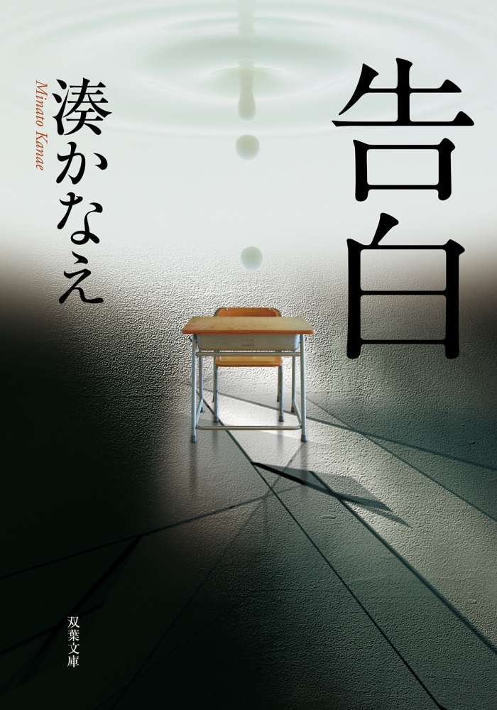
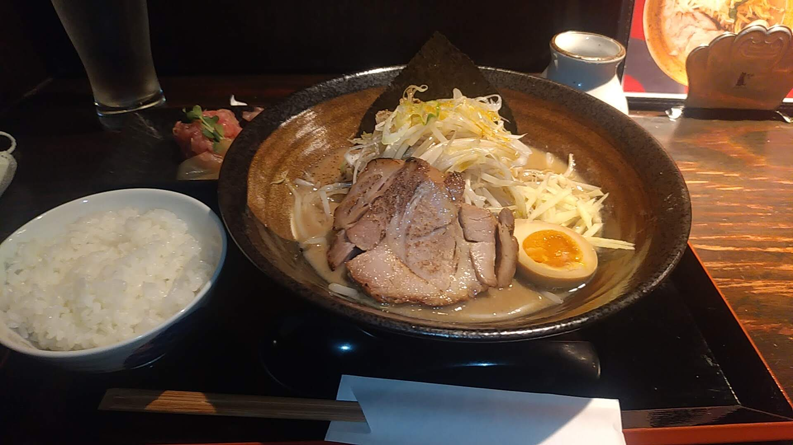

About me
プロフィール
- 名前 もっさん
-
所属
日本大学 理工学部
応用情報工学科 1年生（情報工学を学んでいます） - 性格 他人のペースに飲まれない
-
座右の銘
「不正解は無意味を意味しない」
（チ。―地球の運動について― より）
Life & Goal
大学生活と目標
-
アルバイト
休日は基本的にマクドナルドで働いています。
（週24時間ペース） - 目標 1 応用情報技術者の資格取得
- 目標 2 TOEIC 600点取得（英語の苦手を克服したいです）
Hobbies
趣味・好きなもの


- ゲーム：特にホヨバースのゲームは全般プレイしています。
- 野球観戦：プロ野球よりも高校野球を見るのが好きです。
- 読書：たまに本を読みます。特に東野圭吾と湊かなえの作品が好きです。
- 好きな食べ物：ラーメン
History
これまでの経歴
中学校
野球部に所属し、外野を担当。
また、学級委員を務めました。
高等学校
中学に引き続き野球部に所属し、外野を担当。
高校でも学級委員を務めました。